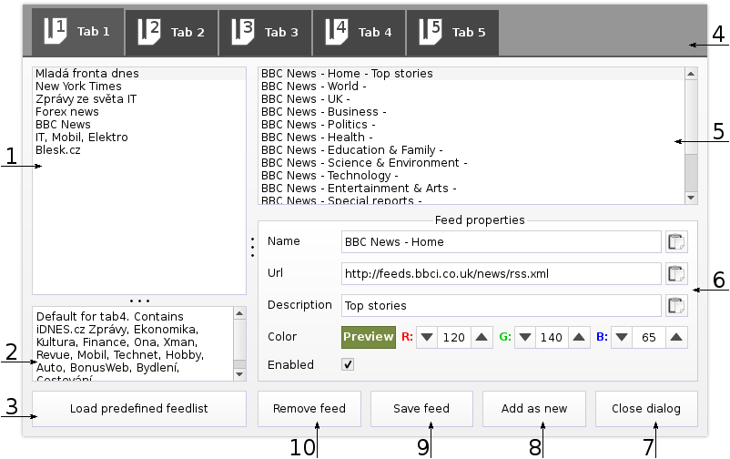

1. Main screen
Description of QRssReader main screen.
- Main toolbar, individual buttons are described below
- Title of RSS channel of selected article
- Description of RSS channel of selected article
- Title of selected article
- Text of selected article
- Additional of selected article
- Progresbar of feed download (visible when updating)
- Main toolbar, individual buttons are described below
- Selected article in news list
- Not selected article in news list
1.1 Main toolbar
| 1. Opens application help |
|
| 2. Navigation in news list (first, previous, next, last) |
|
3. Opens application settings
4. Updates news list under currently selected tab |
|
| 5. One tab holds one list of news from multiple feeds |
|
| 6. Opens editor of RSS feeds |
|
2. Feed list editor
Description of feed list editor.

- List of predefined feed lists
- Description of selected predefined feed list
- Loads predefined feedlist into selected tab
-
- Feedlist tabs
- List of feeds under selected tab
- Properties of feed selected from list
- Closes feed list edit dialog
- Adds modified feed to list as new feed
- Saves changes of feed properties
- Removes selected feed from list
3. Application settings
Description of QRssReader settings.
- Informations about application
- Font sizes of items in news list
- News view font sizes
- Other settings (count of feedlist tabs, number of days that will be shown in news list)
- Clear cache button